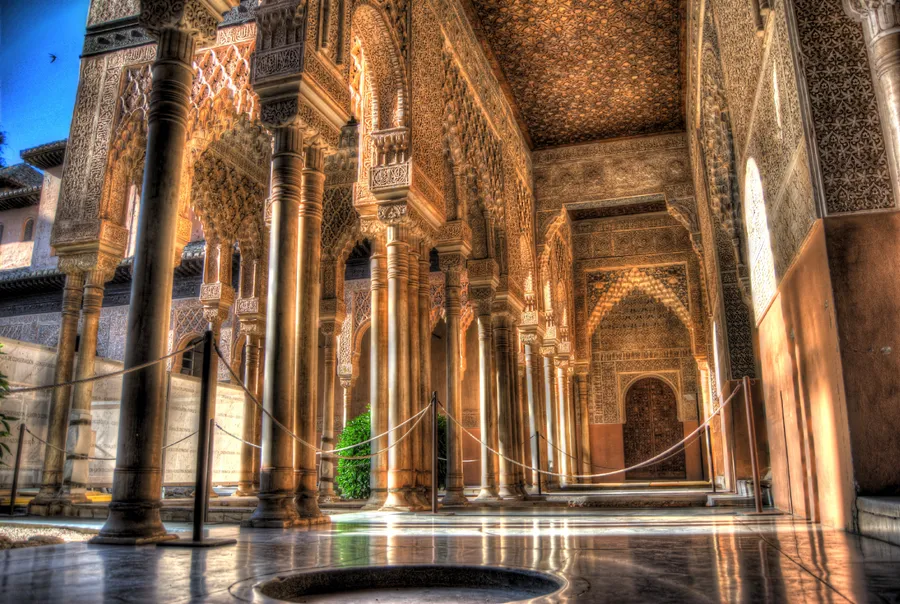
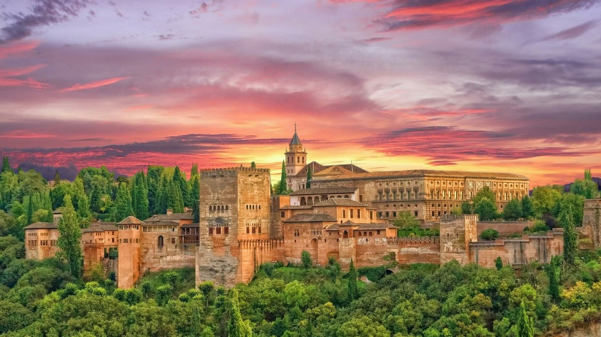
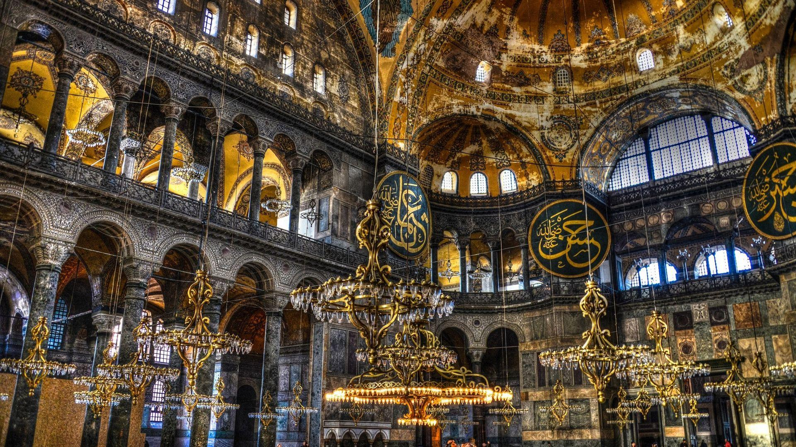
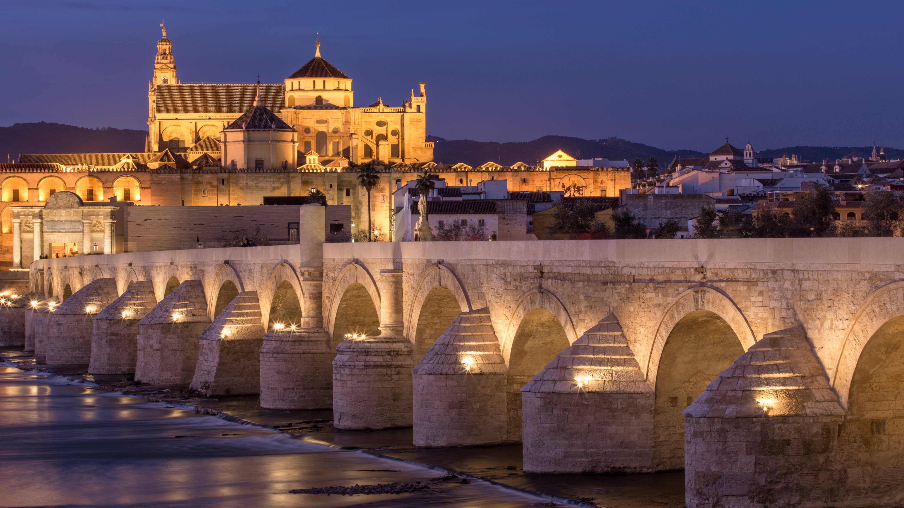

غرناطة
مدينة إسبانية ذات تاريخ عريق
قصر الحمراء
قصر الحمراء هو أحد أشهر المعالم السياحية في إسبانيا وأبرز نماذج الفن المعماري الإسلامي في منطقة الأندلس.
يقع هذا القصر الأسطوري في مدينة غرناطة، آخر معاقل الحكم الإسلامي في شبه الجزيرة الإيبيرية.
بُني قصر الحمراء خلال القرن الرابع عشر الميلادي تحت حكم الدولة الإسلامية في الأندلس. يعكس القصر روعة
الهندسة المعمارية الإسلامية والفن الزخرفي الرفيع الذي ازدهر في تلك الحقبة. تم بناء القصر على هضبة
تطل على مدينة غرناطة، مما منحه موقعًا إستراتيجيًا وإطلالة خلابة.
يتميز قصر الحمراء بأسلوبه المعماري الفريد، مزج بين العناصر الإسلامية والأندلسية. تغطي جدرانه وأقبيته
نقوش وزخارف إسلامية معقدة وفخمة، تضفي جمالاً وأناقة على المبنى. كما يضم القصر مجموعة من الحدائق
والنوافير الرائعة، التي تبرز براعة المصممين المسلمين في الأندلس.
من أشهر أجزاء قصر الحمراء قاعة السفراء، والتي تمتاز بزخارفها الإسلامية الفائقة الدقة والجمال. كما
يضم القصر قاعة الملوك، وقاعة المحاربين، والعديد من الأروقة والردهات الفخمة. تعكس هذه المساحات
الداخلية عظمة الحضارة الإسلامية في الأندلس وروعة إبداعاتها المعمارية.
يعد قصر الحمراء واحدًا من أهم المواقع التراثية في العالم، وقد تم تصنيفه كموقع للتراث العالمي من قبل
اليونسكو في عام 1984. يجذب القصر ملايين الزوار سنويًا من مختلف أنحاء العالم لإستكشاف هذا المعلم
الأثري الفريد، والغوص في تاريخ وحضارة الأندلس الإسلامية.
من أبرز ما يميز قصر الحمراء هو تصميمه المعماري الفريد، الذي يجمع بين عناصر الطراز المغربي والأندلسي.
تتميز واجهات القصر وقاعاته الداخلية بالزخارف الهندسية والنباتية الرائعة، والتي تعكس براعة الفنانين
والحرفيين المسلمين في ذلك الوقت.
يتكون القصر من العديد من الأجنحة والقاعات، كل منها له طابعه المعماري المميز. من أشهرها قاعة السفراء
وقاعة الملوك وقاعة المحاكمات. كما يشتمل القصر على حدائق جميلة ومتنزهات تضفي عليه جوًا من الهدوء
والجمال.

تُعد الحمراء نموذجًا بارزًا للعمارة الإسلامية في الأندلس، واحتفظت بمكانتها كأحد أهم المعالم السياحية في
إسبانيا إلى يومنا هذا. يجذب هذا القصر الفني الآلاف من الزوار سنويًا للاستمتاع بتفاصيله المعمارية
الرائعة.

مسجد قرطبة
مسجد قرطبة، والمعروف أيضًا باسم الجامع الكبير في غرناطة، هو أحد أهم المعالم الإسلامية في هذه المدينة
الأندلسية الشهيرة. يقع المسجد في قلب غرناطة التاريخية، وقد لعب دورًا مركزيًا في الحياة الدينية والثقافية
للمسلمين هناك طوال فترة الحكم الإسلامي.
تاريخ المسجد وبناؤه
تم بناء مسجد قرطبة في القرن الحادي عشر الميلادي، خلال فترة حكم الأمويين في الأندلس. وقد تم بناؤه على
أنقاض كنيسة مسيحية قديمة، متبعًا نمط العمارة الإسلامية الأندلسية المميز.
الطراز المعماري
يتميز مسجد قرطبة بطرازه المعماري الفريد، الذي يجمع بين عناصر من التقاليد الإسلامية والأندلسية. يتكون
المسجد من قاعة الصلاة الرئيسية مغطاة بسقف مقبب، ومحاطة بأروقة متعددة الطوابق. تتميز هذه الأروقة
بأعمدتها الرخامية الفخمة والقباب المزخرفة بالزخارف الهندسية الرائعة.
إحدى السمات المميزة للمسجد هي محراب القبلة، وهو عبارة عن تجويف شبه دائري مزخرف بالفسيفساء الملونة
والزخارف الحجرية. وتتوج المحراب قبة مزخرفة بشكل غاية في الروعة.
دور المسجد في الحياة الأندلسية
كان مسجد قرطبة مركزًا دينيًا وثقافيًا مهمًا في غرناطة خلال فترة الحكم الإسلامي. وقد استخدم كمكان
للعبادة والتعليم الديني والمناقشات الفكرية. كما كان يستضيف العديد من الفعاليات الاجتماعية والثقافية
للمجتمع المسلم في المدينة.
المسجد اليوم
على الرغم من أنه لم يعد يستخدم كمسجد منذ سقوط غرناطة في أيدي الإسبان في القرن الخامس عشر، إلا أن
مسجد قرطبة ما زال يُعد من أهم المعالم التاريخية والمعمارية في المدينة. ويجذب الآلاف من الزوار كل عام
للتمتع بجماله المعماري وإرث الحضارة الإسلامية في الأندلس.
.

لقد لعب هذا المسجد دورًا محوريًا في الحياة الدينية والثقافية للمسلمين في غرناطة خلال فترة الحكم
الإسلامي، حيث كان مركزًا للصلاة والتعليم الديني والنشاطات المجتمعية. حتى يومنا هذا، يجذب المسجد آلاف
الزوار سنويًا ممن يأتون لإعجابهم بهذا التراث المعماري الإسلامي الفريد من نوعه.
بوصفه أحد أهم المعالم الإسلامية في غرناطة، يعتبر مسجد قرطبة شاهدًا على إرث الحضارة الأندلسية الزاخر،
والذي ما زال يبهر الزوار من جميع أنحاء العالم حتى يومنا هذا.
